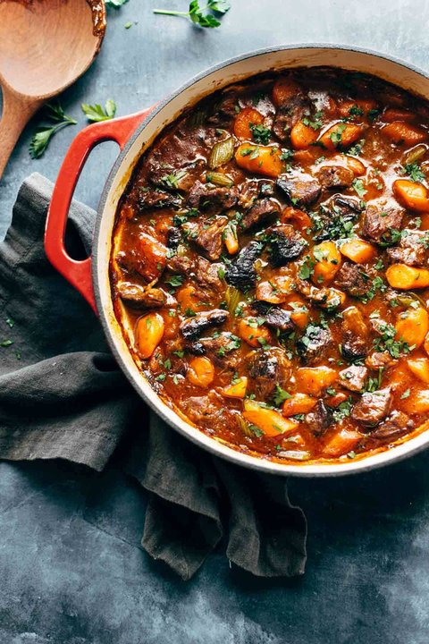

The Perfect Beef Stew

The perfect modern Beef Stew recipe for a cool evening dinner
- 2 lbs beef, chuck roast, fat trimmed, cut into 1-2-inch chunks
- 1 medium onion, sliced thinly
- 2 stalks celery, sliced diagonally in thick pieces
- 6 carrots, sliced diagonally in thick pieces
- 2 tablespoons small tapioca
- 1/2 cup tomato juice
- 2 teaspoons salt
- 1 tablespoon sugar
- Place everything in the Instant Pot. Select the stew/meat setting (about 35 minutes, high pressure). After it’s done, let everything mellow out for about 10 minutes before releasing the steam. Technically at this point, it’s done. But I recommend finishing with a quick browning session in the oven.
- Preheat oven to 320 degrees. Place all ingredients in a baking dish – it can be glass or ceramic (we use a round casserole dish – something between 8×8 and 9×13). Cover with foil and bake for 3-4 hours. If the gravy dries out, you can add a little water to the gravy to loosen it up before serving.
- Whether you make this in the oven or in the Instant Pot, I recommend finishing by giving it about 10-20 minutes in a hot oven (400-ish degrees), uncovered, before serving. It gets the meat nice and caramelized on top and helps the gravy thicken up.